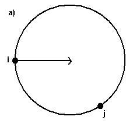
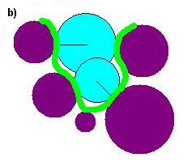

<!DOCTYPE HTML PUBLIC "-//W3C//DTD HTML 4.01 Transitional//EN"
"http://www.w3.org/TR/html4/loose.dtd">
<html>
<head>
<title>Tutorial: Generating Spheres</title>
<style>
.style2 {
	font-size: 36px;
	font-family: Arial, Helvetica, sans-serif;
	font-weight: bold;
}
.style4 {font-family: Arial, Helvetica, sans-serif; font-size: 18px;}
-->
</style>
</head>

<body lang=EN-US link=blue vlink=blue style='tab-interval:.5in'>

<div class=Section1>

<p align=center style='text-align:center'><span class=style2><b><span
style='font-size:27.0pt'>Generating Spheres</span></b></span></p>

<p class=style4style10 align=center style='text-align:center'><span
style='font-family:Arial'>Author: P. Therese Lang<br>
Last updated July 31, 2018 by Scott Brozell</span></p>

<p align="left" class="style4">
This tutorial describes the three steps required to define
receptor active sites for DOCK calculations.
We study the complex L-Arabinose-Binding Protein bound to L-Arabinose
(PDB ID 
  <a href="http://www.rcsb.org/pdb/explore/explore.do?structureId=1abe">1ABE</a>
) as an example system.
However, these techniques should be transferable to any protein-ligand system.
</p>

<p class=style4>
To start this tutorial, obtain the
<a href="../struct_prep/rec_noH.pdb">rec_noH.pdb</a> and the
<a href="../struct_prep/lig_charged.mol2">lig_charged.mol2</a> files from the
&quot;<a href="../struct_prep/prepping_molecules.htm">Structure Preparation
Tutorial</a>.&quot;
<a href="http://www.cgl.ucsf.edu/chimera/">UCSF Chimera</a>'s Tool
<a href="http://www.cgl.ucsf.edu/chimera/current/docs/UsersGuide/dms.html#writedms">Write DMS</a>
(Chimera versions 1.3 and later)
as well as the sphgen, sphere_selector, and showsphere programs that are
distributed and installed with DOCK are required.
</p>

<p class=style4>STEP 1: Generate the molecular surface of the receptor. </p>

<p class=style4><span class=GramE>The molecular surface of the target
is generated, based on
the algorithm developed by Richards (<em><span style='font-family:Arial'>Ann.
Rev. <span class=SpellE>Biophys</span>.</span></em></span><em><span
style='font-family:Arial'> <span class=SpellE><span class=GramE>Bioeng</span></span><span
class=GramE>.</span> 1977. 6:151-176</span></em>) and adapted by Connolly (<em><span
style='font-family:Arial'>M. Connolly, Ph.D. Thesis, University of California,
Berkeley, 1981</span></em>),
by rolling a ball the size of a water
molecule over the van der Waal's surface of the target.
In addition, the surface normal vector at each surface point is computed;
this will be used later to calculate the size of each sphere.
</p>

<blockquote>
  <p class="style4">NOTE: For Windows users, dms and sphgen cannot read files
that are created under the Disk Operating System (DOS). If you encounter strange
problems then this might be the source.  See the 
<a href="http://dock.compbio.ucsf.edu/DOCK_6/faq.htm#DOSLineTerminators">DOCK 6 FAQ DOS</a>
entry for more details.
</p>
</blockquote>

<blockquote style='margin-top:5.0pt;margin-bottom:5.0pt'>

<p class=style4>Primary OPTION: Use the Write DMS Tool in Chimera
</p>

<blockquote style='margin-top:5.0pt;margin-bottom:5.0pt'>

<blockquote style='margin-top:5.0pt;margin-bottom:5.0pt'>

<p class=style4>
Open the 
<a href="../struct_prep/rec_noH.pdb">rec_noH.pdb</a>
file in Chimera, e.g., File -> Open -> rec_noH.pdb.
(See the
<a href="../struct_prep/prepping_molecules.htm">Structure Preparation
Tutorial</a>
for help with basic Chimera operations.)
Generate the surface:
Actions -> Surface -> Show.
Save the surface:
Tools -> Structure Editing -> Write DMS.
Note that this does not exactly duplicate the dms output
due to the vertex density and the atomic radii differences mentioned in the
<a href="http://www.cgl.ucsf.edu/chimera/current/docs/UsersGuide/dms.html#writedms">Write DMS</a>
documentation.
We have no recommendations regarding the best settings.
(The rest of this tutorial and the other tutorials in this series
rely on the dms generated rec.ms as a matter of convenience for 
the DOCK developers.)
For more information on the contents and format of the output file,
see the Chimera 
<a href="http://www.cgl.ucsf.edu/chimera/current/docs/UsersGuide/midas/dms1.html#dmsformat">DMS file format</a>
documentation.
</p>

</blockquote>

</blockquote>

</blockquote>

<blockquote style='margin-top:5.0pt;margin-bottom:5.0pt'>

<p class=style4>Secondary OPTION: Use the dms program
</p>

<blockquote style='margin-top:5.0pt;margin-bottom:5.0pt'>

<blockquote style='margin-top:5.0pt;margin-bottom:5.0pt'>

<p class=style4>
The program dms, while deprecated, can still be downloaded from
<a href="http://www.cgl.ucsf.edu/Overview/software.html#dms"> www.cgl.ucsf.edu/Overview/software.html#dms</a>.
The command line options for the <span class=SpellE>dms</span> program are
</p>

<blockquote style='margin-top:5.0pt;margin-bottom:5.0pt'>

<blockquote style='margin-top:5.0pt;margin-bottom:5.0pt'>

<blockquote style='margin-top:5.0pt;margin-bottom:5.0pt'>

<blockquote style='margin-top:5.0pt;margin-bottom:5.0pt'>

<p class=style4>USAGE: <span class=SpellE>dms</span> <span class=SpellE>input_file</span>
<st1:citation w:st="on">[-a -d density -g file -<span class=SpellE>i</span>
 file -n -w radius -v]</st1:citation> -o file </p>

<div align=center>

<table class=MsoNormalTable border=0 cellpadding=0 width=479 style='width:359.25pt;
 mso-cellspacing:1.5pt;mso-padding-alt:0in 5.4pt 0in 5.4pt'>
 <tr class="style4" style='mso-yfti-irow:0;mso-yfti-firstrow:yes'>
  <td width=93 style='width:69.75pt;padding:.75pt .75pt .75pt .75pt'>  <span style='font-size:13.5pt'>-a <o:p></o:p></span></td>
  <td width=370 style='width:277.5pt;padding:.75pt .75pt .75pt .75pt'>  <span style='font-size:13.5pt'>use
  all atoms, not just amino acids<o:p></o:p></span> </td>
 </tr>
 <tr class="style4" style='mso-yfti-irow:1'>
  <td style='padding:.75pt .75pt .75pt .75pt'>  <span style='font-size:13.5pt'>-d<o:p></o:p></span> </td>
  <td style='padding:.75pt .75pt .75pt .75pt'>  <span style='font-size:13.5pt'>change
  density of points <o:p></o:p></span> </td>
 </tr>
 <tr class="style4" style='mso-yfti-irow:2'>
  <td style='padding:.75pt .75pt .75pt .75pt'>  <span class=style41><span style='font-size:13.5pt'>-g</span></span><span
  style='font-size:13.5pt'><o:p></o:p></span> </td>
  <td style='padding:.75pt .75pt .75pt .75pt'>  <span style='font-size:13.5pt'>send
  messages to file <o:p></o:p></span> </td>
 </tr>
 <tr class="style4" style='mso-yfti-irow:3'>
  <td style='padding:.75pt .75pt .75pt .75pt'>  <span style='font-size:13.5pt'>-<span
  class=SpellE>i</span><o:p></o:p></span> </td>
  <td style='padding:.75pt .75pt .75pt .75pt'>  <span style='font-size:13.5pt'>calculate
  only surface for specified atoms <o:p></o:p></span> </td>
 </tr>
 <tr class="style4" style='mso-yfti-irow:4'>
  <td style='padding:.75pt .75pt .75pt .75pt'>  <span style='font-size:13.5pt'>-n<o:p></o:p></span> </td>
  <td style='padding:.75pt .75pt .75pt .75pt'>  <span style='font-size:13.5pt'>calculate
      <span class=SpellE>normals</span> for surface points<o:p></o:p></span> </td>
 </tr>
 <tr class="style4" style='mso-yfti-irow:5'>
  <td style='padding:.75pt .75pt .75pt .75pt'>  <span class=style41><span style='font-size:13.5pt'>-w</span></span><span
  style='font-size:13.5pt'><o:p></o:p></span> </td>
  <td style='padding:.75pt .75pt .75pt .75pt'>  <span class=style41><span style='font-size:13.5pt'>change
  probe radius </span></span><span style='font-size:13.5pt'><o:p></o:p></span> </td>
 </tr>
 <tr class="style4" style='mso-yfti-irow:6'>
  <td style='padding:.75pt .75pt .75pt .75pt'>  <span class=style41><span style='font-size:13.5pt'>-v</span></span><span
  style='font-size:13.5pt'><o:p></o:p></span> </td>
  <td style='padding:.75pt .75pt .75pt .75pt'>  <span style='font-size:13.5pt'>verbose
      <o:p></o:p></span> </td>
 </tr>
 <tr class="style4" style='mso-yfti-irow:7;mso-yfti-lastrow:yes'>
  <td style='padding:.75pt .75pt .75pt .75pt'>  <span style='font-size:13.5pt'>-o<o:p></o:p></span> </td>
  <td style='padding:.75pt .75pt .75pt .75pt'>  <span style='font-size:13.5pt'>specify
  output file name (required) <o:p></o:p></span> </td>
 </tr>
</table>

</div>

</blockquote>

</blockquote>

</blockquote>

</blockquote>

<p><span class="style4">To generate the surface, use the command
&quot;dms rec_noH.pdb -n -w 1.4 -v -o <a href="rec.ms">rec.ms</a>&quot;.
For more information on the contents and format of the output file,
see the documentation included in the dms distribution.
For help with dms installation, read the 
<a href="http://dock.compbio.ucsf.edu/DOCK_6/faq.htm#dmsinstall">DOCK 6 FAQ dms</a>
entry.
</span></p>

</blockquote>

</blockquote>

</blockquote>

<p class="style4"><span class="style4"> A graphical
  representation of the molecular surface, shown in green, is below:<o:p></o:p></span><o:p></o:p></p>
<p align=center style='text-align:center'></p>

<p align=center class="style4" style='text-align:center'><em>Image generated using
Chimera (<a
href="http://www.cgl.ucsf.edu/chimera/">http://www.cgl.ucsf.edu/chimera</a>) </em></p>

<p class=style4>STEP 2: Generate the spheres surrounding the receptor. </p>

<p class=style4>
Sets of overlapping spheres are used to create
a negative image of the surface invaginations of the target.
The program <span class=SpellE>sphgen</span> that is
distributed as an accessory with DOCK
(<em><span style='font-family:Arial'>Kuntz
et al. J. Mol. Biol. 1982. 161: 269-288</span></em>)
generates spheres from the molecular surface and the normal vectors.
</p>

<div align=center>

<table class=MsoNormalTable border=0 cellpadding=0 width=601 style='width:450.75pt;
 mso-cellspacing:1.5pt;mso-padding-alt:0in 5.4pt 0in 5.4pt'>
 <tr style='mso-yfti-irow:0;mso-yfti-firstrow:yes'>
  <td width=267 style='width:200.25pt;padding:.75pt .75pt .75pt .75pt'>
  <p class=MsoNormal align=center style='text-align:center'><span
  style='font-size:13.5pt;font-family:Arial'></span></p>
  </td>
  <td width=18 style='width:13.5pt;padding:.75pt .75pt .75pt .75pt'>
  <p class=MsoNormal><span style='font-size:13.5pt;font-family:Arial'><o:p>&nbsp;</o:p></span></p>
  </td>
  <td width=302 style='width:226.5pt;padding:.75pt .75pt .75pt .75pt'>
  <p class=MsoNormal align=center style='text-align:center'></p>
  </td>
 </tr>
 <tr style='mso-yfti-irow:1;mso-yfti-lastrow:yes'>
  <td colspan=3 style='padding:.75pt .75pt .75pt .75pt'>
  <p class=MsoNormal><span style='font-size:13.5pt;font-family:Arial'>(a) Each
  sphere is generated tangent to surface points<em><span style='font-family:
  Arial'> <span class=SpellE>i</span>, j </span></em>with the center on the
  surface normal of point<em><span style='font-family:Arial'> <span
  class=SpellE>i</span></span></em>. (b) Schematic representation of a small
  binding site formed by five atoms (purple). The spheres (blue) are generated
  using points from the molecular surface (green) with their centers lying
  along the surface <span class=SpellE>normals</span> (thin line). <o:p></o:p></span></p>
  </td>
 </tr>
</table>

</div>

<p class=style4>Spheres are calculated over the entire surface, producing
approximately one sphere per surface point. This dense representation is then
filtered to keep only the largest sphere associated with each surface atom. The
filtered set is then clustered using a single linkage algorithm. Each resulting
cluster represents an <span class=SpellE>evagination</span> in the target.
The sphgen input file must be named <a href="INSPH">INSPH</a>,
and contains the following information:</p>

<div align=center>

<table class=MsoNormalTable border=0 cellpadding=0 width=758 style='width:568.5pt;
 mso-cellspacing:1.5pt;mso-padding-alt:0in 5.4pt 0in 5.4pt'>
 <tr class="style4" style='mso-yfti-irow:0;mso-yfti-firstrow:yes'>
  <td width=102 style='width:76.5pt;padding:.75pt .75pt .75pt .75pt'>
  <p align="left" class=MsoNormal style6><span class=SpellE><b><span style='font-size:13.5pt'>rec.ms</span></b></span><b><span style='font-size:13.5pt'><o:p></o:p></span></b></p>  </td>
  <td width=646 style='width:484.5pt;padding:.75pt .75pt .75pt .75pt'>
  <p align="left" class=MsoNormal style6><span class=style41><span style='font-size:13.5pt'>#molecular
  surface file (no default) </span></span></p>  </td>
 </tr>
 <tr class="style4" style='mso-yfti-irow:1'>
  <td style='padding:.75pt .75pt .75pt .75pt'>
  <p align="left" class=MsoNormal style6><span class=style41><b><span style='font-size:13.5pt'>R</span></b></span><b><o:p></o:p></b></p>  </td>
  <td style='padding:.75pt .75pt .75pt .75pt'>
  <p align="left" class=MsoNormal style6><span class=style41><span style='font-size:13.5pt'>#sphere
  outside of surface (R) or inside surface (L) (no default) </span></span></p>  </td>
 </tr>
 <tr class="style4" style='mso-yfti-irow:2'>
  <td style='padding:.75pt .75pt .75pt .75pt'>
  <p align="left" class=MsoNormal style6><span class=style41><b><span style='font-size:13.5pt'>X</span></b></span><b><o:p></o:p></b></p>  </td>
  <td style='padding:.75pt .75pt .75pt .75pt'>
  <p align="left" class=MsoNormal style6><span class=style41><span style='font-size:13.5pt'>#specifies
  subset of surface points to be used (X=all points) (no default) </span></span></p>  </td>
 </tr>
 <tr class="style4" style='mso-yfti-irow:3'>
  <td style='padding:.75pt .75pt .75pt .75pt'>
  <p align="left" class=MsoNormal style6><span class=style41><b><span style='font-size:13.5pt'>0.0</span></b></span><b><o:p></o:p></b></p>  </td>
  <td style='padding:.75pt .75pt .75pt .75pt'>
  <p align="left" class=MsoNormal style6><span class=style41><span style='font-size:13.5pt'>#prevents
  generation of large spheres with close surface contacts (default=0.0)</span></span></p>  </td>
 </tr>
 <tr class="style4" style='mso-yfti-irow:4'>
  <td style='padding:.75pt .75pt .75pt .75pt'>
  <p align="left" class=MsoNormal style6><span class=style41><b><span style='font-size:13.5pt'>4.0</span></b></span><b><o:p></o:p></b></p>  </td>
  <td style='padding:.75pt .75pt .75pt .75pt'>
  <p align="left" class=MsoNormal style6><span class=style41><span style='font-size:13.5pt'>#maximum
  sphere radius in Angstroms (default=5.0)</span></span></p>  </td>
 </tr>
 <tr class="style4" style='mso-yfti-irow:5'>
  <td style='padding:.75pt .75pt .75pt .75pt'>
  <p align="left" class=MsoNormal style6><span class=style41><b><span style='font-size:13.5pt'>1.4</span></b></span><b><o:p></o:p></b></p>  </td>
  <td style='padding:.75pt .75pt .75pt .75pt'>
  <p align="left" class=MsoNormal style6><span class=style41><span style='font-size:13.5pt'>#minimum
  sphere radius in Angstroms (no default)</span></span></p>  </td>
 </tr>
 <tr class="style4" style='mso-yfti-irow:6;mso-yfti-lastrow:yes'>
  <td style='padding:.75pt .75pt .75pt .75pt'>
  <p align="left" class=MsoNormal style6><span class=SpellE><span class=style41><b><span
  style='font-size:13.5pt'>rec.sph</span></b></span></span><b><o:p></o:p></b></p>  </td>
  <td style='padding:.75pt .75pt .75pt .75pt'>
  <p align="left" class=MsoNormal style6><span class=style41><span style='font-size:13.5pt'>#clustered
  spheres file (no default) </span></span></p>  </td>
 </tr>
</table>

</div>

<p class=style4>
Note that the comments above - labeled by # - are for the tutorial
and must not exist in the INSPH file.
</p>

<p class=style4>To generate the spheres, simply use the command &quot;<span
class=SpellE>sphgen</span>&quot; in the same folder that contains the INSPH
and the rec.ms files.
The output will be two files: <a href="rec.sph"><span class=SpellE>rec.sph</span></a>,
which contains the spheres in clusters, and <a href="OUTSPH">OUTSPH</a>, which
contains general information about the calculation. </p>

<p class=style4>
If sphgen has been run before then be sure to
remove the output files (OUTSPH and rec.sph) prior to its next execution.
Finally, for technical reasons, sphgen cannot handle more than 99999 spheres.
For a large target, we recommend selecting a subsection of the protein via a
visualization program and using that to generate the molecular surface and
the spheres. 
<!--
Alternatively, try the contributed code
<a href="http://dock.compbio.ucsf.edu/Contributed_Code/sphgen_cpp.htm">
sphgen_cpp</a>.
-->
</p>


<p class=style4>STEP 3: Select a subset of spheres to represent the binding site(s). </p>

<p class=style4>
A set of spheres is a required input of the grid generation program.
Three options are described below for selecting the spheres that will
represent the binding site(s).
Note that a sphere file, <span class=SpellE>xxx.sph</span>,
is plain text and can be edited.
</p>

<blockquote style='margin-top:5.0pt;margin-bottom:5.0pt'>

<p class=style4>OPTION 1: Use the largest cluster generated by <span
class=SpellE>sphgen</span></p>

<blockquote style='margin-top:5.0pt;margin-bottom:5.0pt'>

<blockquote style='margin-top:5.0pt;margin-bottom:5.0pt'>

<p class=style4>The clusters contained in the <span class=SpellE>rec.sph</span>
file are ranked according to size (number of spheres in the cluster).
The largest cluster is typically the <span class=SpellE>ligand</span>
binding site of the receptor. To visualize the spheres, use the
program <span class=SpellE>showsphere</span>,
distributed as an accessory with DOCK.
The showsphere input file can have any name
and contains the following information:</p>

<div align=center>

<table class=MsoNormalTable border=0 cellpadding=0 width=538 style='width:403.5pt;
 mso-cellspacing:1.5pt;mso-padding-alt:0in 5.4pt 0in 5.4pt'>
 <tr class="style4" style='mso-yfti-irow:0;mso-yfti-firstrow:yes'>
  <td width=211 style='width:158.25pt;padding:.75pt .75pt .75pt .75pt'>
  <p class=MsoNormal style6><span class=SpellE><span style='font-size:13.5pt'>rec.sph</span></span><span style='font-size:13.5pt'><o:p></o:p></span></p>  </td>
  <td width=311 style='width:233.25pt;padding:.75pt .75pt .75pt .75pt'>
  <p class=MsoNormal style6><span style='font-size:13.5pt'>#sphere
  cluster file <o:p></o:p></span></p>  </td>
 </tr>
 <tr class="style4" style='mso-yfti-irow:1'>
  <td style='padding:.75pt .75pt .75pt .75pt'>
  <p class=MsoNormal style6><span style='font-size:13.5pt'>1<o:p></o:p></span></p>  </td>
  <td style='padding:.75pt .75pt .75pt .75pt'>
  <p class=MsoNormal style6><span style='font-size:13.5pt'>#cluster
  number to process (&lt;0 = all) <o:p></o:p></span></p>  </td>
 </tr>
 <tr class="style4" style='mso-yfti-irow:2'>
  <td style='padding:.75pt .75pt .75pt .75pt'>
  <p class=MsoNormal style6><span style='font-size:13.5pt'>N<o:p></o:p></span></p>  </td>
  <td style='padding:.75pt .75pt .75pt .75pt'>
  <p class=MsoNormal style6><span style='font-size:13.5pt'>#generate
  surface as well as <span class=SpellE>pdb</span> file <o:p></o:p></span></p>  </td>
 </tr>
 <tr class="style4" style='mso-yfti-irow:3;mso-yfti-lastrow:yes'>
  <td style='padding:.75pt .75pt .75pt .75pt'>
  <p class=MsoNormal style6>selected_cluster.pdb</td>
  <td style='padding:.75pt .75pt .75pt .75pt'>
  <p class=MsoNormal style6><span style='font-size:13.5pt'>#name for
  output file</span></p>  </td>
 </tr>
</table>

</div>

<p class=style4>
Note that the comments above - labeled by # - are for the tutorial
and must not exist in the showsphere input file.
</p>

<p class=style4>To convert the first and largest cluster in the
sphere file to <span class=SpellE>pdb</span>
format, use the command &quot;<span class=SpellE>showsphere</span> &lt; <a
href="sphgen_cluster.in"><span class=SpellE>sphgen_cluster.in</span></a>&quot;.
Below is a picture of the largest cluster,
where the protein is shown in purple and the spheres are shown in yellow
(<a href="sphgen_cluster.pdb"><span class=SpellE>sphgen_cluster.pdb</span></a>).
Note that in Chimera each SPH residue may be initially displayed as
a bunch of little dots.
Actions -> Atoms/Bonds -> sphere turns the dots into sizable spheres.
</p>

<p class=style4 align=center style='text-align:center'></p>

<p class=style4 align=center style='text-align:center'><em><span
style='font-family:Arial'>Image generated using Chimera (<a
href="http://www.cgl.ucsf.edu/chimera/">http://www.cgl.ucsf.edu/chimera</a>) </span></em></p>

<p class=style4>To use the first and largest cluster in the
sphere file as input for the grid generation program,
simply edit the sphere cluster file, rec.sph, to delete the other clusters.
</p>

</blockquote>

</blockquote>

</blockquote>

<blockquote style='margin-top:5.0pt;margin-bottom:5.0pt'>

<p class="style4">OPTION 2: Select spheres within some radius of a desired location</p>

<blockquote style='margin-top:5.0pt;margin-bottom:5.0pt'>

<blockquote style='margin-top:5.0pt;margin-bottom:5.0pt'>

<p class=style4>If the active site is known then one can select spheres within a
radius of a set of atoms that describes the site.  To do this use
the program <span class=SpellE>sphere_selector</span>, which is distributed as
an accessory with DOCK. The syntax for <span class=SpellE>sphere_selector</span>
is</p>

<p class=style4 align=center style='text-align:center'>Usage: <span
class=SpellE>sphere_selector</span> sphgen_sphere_cluster_file.sph
set_of_atoms_file.mol2 radius</p>

<p class=style4>Here, we select all spheres within 10.0 Angstroms root mean
square deviation (RMSD) from every atom of the crystal structure of the
<span class=SpellE>ligand</span>,
using the command &quot;<span class=SpellE>sphere_selector</span>
<span class=SpellE>rec.sph</span> lig_charged.mol2 10.0&quot;.
The output file always has the name
<a href="selected_spheres.sph"><span class=SpellE>selected_spheres.sph</span></a>.
</p>

<p class=style4>
These spheres
can be visualized using the <span class=SpellE>showsphere</span> program,
mentioned in OPTION 1, with the command &quot;<span class=SpellE>showsphere</span>
&lt; <a href="selected_spheres.in"><span class=SpellE>selected_spheres.in</span></a>&quot;.
Below is a picture of the selected spheres (blue) (<a
href="selected_spheres.pdb"><span class=SpellE>selected_spheres.pdb</span></a>):
</p>

<p class=style4 align=center style='text-align:center'></p>

<p class=style4 align=center style='text-align:center'><em><span
style='font-family:Arial'>Image generated using Chimera (<a
href="http://www.cgl.ucsf.edu/chimera/">http://www.cgl.ucsf.edu/chimera</a>) </span></em></p>

</blockquote>

</blockquote>

<p class=style4>OPTION 3: Add spheres manually</p>

<blockquote style='margin-top:5.0pt;margin-bottom:5.0pt'>

<blockquote style='margin-top:5.0pt;margin-bottom:5.0pt'>

<p class=style4>
This option can be used if a region of space of interest
is poorly populated by <span class=SpellE>sphgen</span>. To do this,
start with a template sphere file and edit it to
add or modify parameters according to the format below:</p>

<p class=style4>FORMAT: (I5, 3F10.5, F8.3, I5, I2, I3) with values
corresponding to</p>

<ul type=disc>
 <li class=MsoNormal style='mso-margin-top-alt:auto;mso-margin-bottom-alt:auto;
     mso-list:l1 level1 lfo3;tab-stops:list .5in'><span style='font-size:13.5pt;
     font-family:Arial'>Number of the first atom with which the surface point
     is associated; that is, the atom whose surface normal defines the sphere center;
     point <em><span style='font-family: Arial'> i </span></em> in the above picture
      <o:p></o:p></span></li>
 <li class=MsoNormal style='mso-margin-top-alt:auto;mso-margin-bottom-alt:auto;
     mso-list:l1 level1 lfo3;tab-stops:list .5in'><span style='font-size:13.5pt;
     font-family:Arial'>X, Y, and Z coordinates of the new sphere center<o:p></o:p></span></li>
 <li class=MsoNormal style='mso-margin-top-alt:auto;mso-margin-bottom-alt:auto;
     mso-list:l1 level1 lfo3;tab-stops:list .5in'><span style='font-size:13.5pt;
     font-family:Arial'>The sphere radius<o:p></o:p></span></li>
 <li class=MsoNormal style='mso-margin-top-alt:auto;mso-margin-bottom-alt:auto;
     mso-list:l1 level1 lfo3;tab-stops:list .5in'><span style='font-size:13.5pt;
     font-family:Arial'>Number of the second atom with which the surface point
     is associated;
     point <em><span style='font-family: Arial'> j </span></em> in the above picture
      <o:p></o:p></span></li>
 <li class=MsoNormal style='mso-margin-top-alt:auto;mso-margin-bottom-alt:auto;
     mso-list:l1 level1 lfo3;tab-stops:list .5in'><span style='font-size:13.5pt;
     font-family:Arial'>Critical cluster to which this sphere belongs (used
     only for critical points filter)<o:p></o:p></span></li>
 <li class=MsoNormal style='mso-margin-top-alt:auto;mso-margin-bottom-alt:auto;
     mso-list:l1 level1 lfo3;tab-stops:list .5in'><span style='font-size:13.5pt;
     font-family:Arial'>Sphere color (used only for chemical matching) <o:p></o:p></span></li>
</ul>

<p class=style4>&nbsp;</p>

</blockquote>

</blockquote>

</blockquote>

</div>

</body>

</html>
